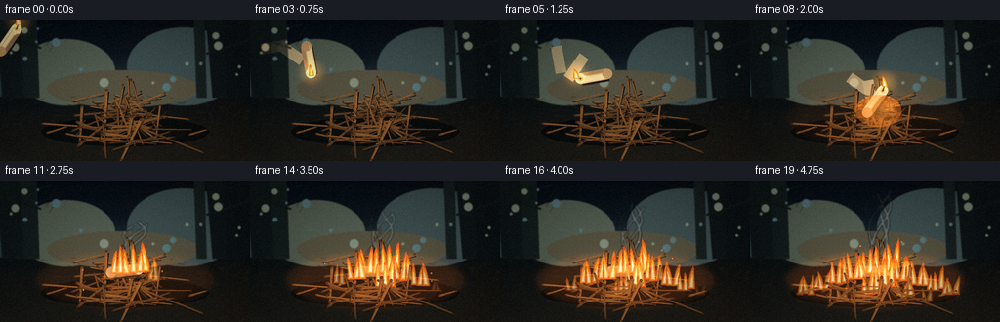
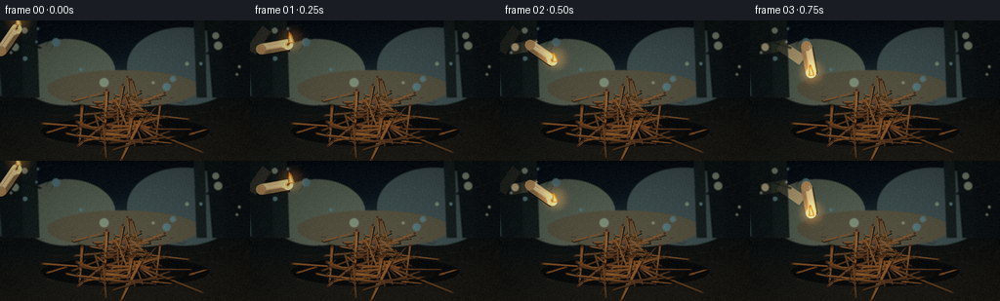

CODING AGENTS AS PIXEL WORLD MODELS
traex/DeepSeek-V4.1-Flash · material_0027
点击播放 · 原生 RGB 像素
逐轮保存的候选
回放视频、检查图与代码变化。
每份候选均可单独播放。实际图片检查记录在下方工具轨迹中。
候选 01播放与检查图
点击播放 · 原生 RGB 像素


展开代码变化
--- 上一保存版本
+++ 本次保存版本
@@ -0,0 +1,871 @@
+"""Procedural RGB video: a burning candle is thrown into a pile of dry twigs."""
+
+from __future__ import annotations
+
+import math
+from pathlib import Path
+
+import numpy as np
+from PIL import Image, ImageDraw, ImageFilter
+
+import artifact_io
+
+
+W, H, N, FPS = 256, 144, 20, 4.0
+SS = 4
+SW, SH = W * SS, H * SS
+TAU = math.tau
+
+
+def sc(value: float) -> int:
+ return int(round(value * SS))
+
+
+def pt(x: float, y: float) -> tuple[int, int]:
+ return sc(x), sc(y)
+
+
+def rgba(color: tuple[int, int, int], alpha: int = 255) -> tuple[int, int, int, int]:
+ return (*color, alpha)
+
+
+def lerp(a: float, b: float, t: float) -> float:
+ return a + (b - a) * t
+
+
+def clamp01(value: float) -> float:
+ return max(0.0, min(1.0, value))
+
+
+def smoothstep(t: float) -> float:
+ t = clamp01(t)
+ return t * t * (3.0 - 2.0 * t)
+
+
+def mix_color(
+ a: tuple[int, int, int], b: tuple[int, int, int], t: float
+) -> tuple[int, int, int]:
+ return tuple(int(round(lerp(a[i], b[i], clamp01(t)))) for i in range(3))
+
+
+def layer() -> Image.Image:
+ return Image.new("RGBA", (SW, SH), (0, 0, 0, 0))
+
+
+def composite(base: Image.Image, overlay: Image.Image) -> Image.Image:
+ return Image.alpha_composite(base, overlay)
+
+
+def add_bloom(base: Image.Image, glow: Image.Image, radius: float, strength: float) -> Image.Image:
+ blurred = glow.filter(ImageFilter.GaussianBlur(sc(radius)))
+ src = np.asarray(base).astype(np.float32)
+ add = np.asarray(blurred).astype(np.float32)
+ alpha = (add[:, :, 3:4] / 255.0) * strength
+ rgb = add[:, :, :3]
+ src[:, :, :3] = np.clip(src[:, :, :3] + rgb * alpha, 0, 255)
+ return Image.fromarray(np.uint8(src), "RGBA")
+
+
+def gradient_background(rng: np.random.Generator) -> Image.Image:
+ yy = np.arange(SH, dtype=np.float32)[:, None] / (SH - 1)
+ xx = np.arange(SW, dtype=np.float32)[None, :] / (SW - 1)
+ horizon = 0.54
+
+ sky_top = np.array([7, 13, 20], dtype=np.float32)
+ sky_mid = np.array([18, 31, 37], dtype=np.float32)
+ fog = np.array([58, 67, 65], dtype=np.float32)
+ ground = np.array([31, 29, 23], dtype=np.float32)
+ ground_dark = np.array([12, 16, 17], dtype=np.float32)
+
+ image = np.zeros((SH, SW, 3), dtype=np.float32)
+ sky_t = np.clip(yy / horizon, 0, 1)
+ image[:] = sky_top * (1 - sky_t[:, :, None]) + sky_mid * sky_t[:, :, None]
+ fog_band = np.exp(-((yy - 0.48) / 0.12) ** 2)
+ image += fog[None, None, :] * fog_band[:, :, None] * 0.48
+
+ ground_mask = np.clip((yy - horizon) / (1 - horizon), 0, 1)
+ ground_color = ground_dark * (1 - ground_mask[:, :, None]) + ground * ground_mask[:, :, None]
+ image = image * (1 - (yy >= horizon)[:, :, None]) + ground_color * (yy >= horizon)[:, :, None]
+ image += (xx - 0.5)[:, :, None] * np.array([3.0, 0.0, -2.0])[None, None, :]
+
+ fine = rng.normal(0.0, 1.0, (SH // 4, SW // 4)).astype(np.float32)
+ fine = np.asarray(
+ Image.fromarray(np.uint8(np.clip(fine * 20 + 128, 0, 255))).resize(
+ (SW, SH), Image.Resampling.BICUBIC
+ ),
+ dtype=np.float32,
+ )
+ image += (fine[:, :, None] - 128.0) * 0.055
+ return Image.fromarray(np.uint8(np.clip(image, 0, 255))).convert("RGBA")
+
+
+def draw_background(rng: np.random.Generator) -> Image.Image:
+ bg = gradient_background(rng)
+ d = ImageDraw.Draw(bg, "RGBA")
+
+ # Soft pools of distant light keep the dark scene readable without flattening it.
+ for cx, cy, rx, ry, color, alpha in [
+ (68, 53, 50, 34, (82, 92, 79), 24),
+ (188, 47, 58, 40, (61, 77, 78), 20),
+ (126, 70, 78, 19, (84, 80, 63), 18),
+ ]:
+ d.ellipse(
+ (sc(cx - rx), sc(cy - ry), sc(cx + rx), sc(cy + ry)),
+ fill=rgba(color, alpha),
+ )
+
+ # Out-of-focus trunks establish a forest interior while preserving focus on the pile.
+ trunks = [
+ (12, 29, 5, (15, 23, 24), 210),
+ (29, 17, 4, (20, 29, 29), 145),
+ (223, 24, 7, (14, 21, 23), 220),
+ (244, 32, 5, (12, 18, 21), 230),
+ (204, 11, 3, (23, 32, 31), 125),
+ ]
+ for x, width, lean, color, alpha in trunks:
+ points = [
+ pt(x - width / 2, 0),
+ pt(x + width / 2, 0),
+ pt(x + lean + width * 0.42, 79),
+ pt(x + lean - width * 0.52, 79),
+ ]
+ d.polygon(points, fill=rgba(color, alpha))
+
+ # A few branches and hanging needles in the upper corners frame the action.
+ branch_color = rgba((16, 24, 24), 215)
+ for x1, y1, x2, y2, width in [
+ (0, 15, 42, 28, 2.0),
+ (22, 12, 53, 4, 1.3),
+ (256, 19, 211, 34, 2.2),
+ (238, 7, 201, 1, 1.2),
+ ]:
+ d.line((pt(x1, y1), pt(x2, y2)), fill=branch_color, width=sc(width))
+ for _ in range(24):
+ side = -1 if rng.random() < 0.5 else 1
+ base_x = rng.uniform(0 if side < 0 else 198, 58 if side < 0 else 256)
+ base_y = rng.uniform(3, 34)
+ dx = rng.uniform(2, 7) * side
+ dy = rng.uniform(3, 10)
+ d.line(
+ (pt(base_x, base_y), pt(base_x + dx, base_y + dy)),
+ fill=rgba((18, 29, 27), 155),
+ width=max(1, sc(0.5)),
+ )
+
+ # Ground litter and shallow root shadows.
+ for _ in range(100):
+ x = rng.uniform(0, W)
+ y = rng.uniform(75, 143)
+ length = rng.uniform(1.5, 8.0)
+ angle = rng.uniform(-0.45, 0.45)
+ tone = int(rng.integers(26, 55))
+ d.line(
+ (pt(x, y), pt(x + math.cos(angle) * length, y + math.sin(angle) * length)),
+ fill=rgba((tone, int(tone * 0.78), int(tone * 0.50)), int(rng.integers(35, 100))),
+ width=max(1, sc(rng.uniform(0.35, 0.9))),
+ )
+
+ # Bokeh dust in the air.
+ for _ in range(18):
+ x = rng.uniform(10, W - 10)
+ y = rng.uniform(8, 72)
+ radius = rng.uniform(1.2, 4.8)
+ color = (126, 139, 120) if rng.random() < 0.55 else (84, 116, 122)
+ d.ellipse(
+ (sc(x - radius), sc(y - radius), sc(x + radius), sc(y + radius)),
+ fill=rgba(color, int(rng.integers(8, 25))),
+ )
+
+ bg = bg.filter(ImageFilter.GaussianBlur(sc(0.48)))
+ return bg
+
+
+def make_twigs(rng: np.random.Generator) -> list[dict]:
+ twigs: list[dict] = []
+ for depth in range(3):
+ count = 24 - depth * 2
+ for _ in range(count):
+ if depth == 0:
+ y = rng.uniform(78, 96)
+ spread = rng.uniform(31, 59)
+ elif depth == 1:
+ y = rng.uniform(91, 110)
+ spread = rng.uniform(42, 68)
+ else:
+ y = rng.uniform(104, 124)
+ spread = rng.uniform(50, 74)
+ x = 128 + rng.normal(0, spread * 0.38)
+ x = float(np.clip(x, 34, 222))
+ length = rng.uniform(23, 67) * (0.82 + depth * 0.12)
+ angle = rng.normal(0.03, 0.35)
+ if rng.random() < 0.18:
+ angle += math.pi * 0.5
+ x1 = x - math.cos(angle) * length / 2
+ y1 = y - math.sin(angle) * length / 2
+ x2 = x + math.cos(angle) * length / 2
+ y2 = y + math.sin(angle) * length / 2
+ width = rng.uniform(1.15, 3.45) * (0.86 + depth * 0.10)
+ twigs.append(
+ {
+ "x1": x1,
+ "y1": y1,
+ "x2": x2,
+ "y2": y2,
+ "width": width,
+ "depth": depth,
+ "tone": rng.uniform(0.0, 1.0),
+ "branch": rng.random() < 0.42,
+ "seed": int(rng.integers(0, 2**31 - 1)),
+ }
+ )
+ twigs.sort(key=lambda item: (item["depth"], (item["y1"] + item["y2"]) * 0.5))
+ return twigs
+
+
+def draw_twig(d: ImageDraw.ImageDraw, twig: dict, foreground: bool = False) -> None:
+ x1, y1, x2, y2 = twig["x1"], twig["y1"], twig["x2"], twig["y2"]
+ width = twig["width"] * (1.15 if foreground else 1.0)
+ depth = twig["depth"]
+ tone = twig["tone"]
+ rng = np.random.default_rng(twig["seed"])
+
+ dx, dy = x2 - x1, y2 - y1
+ length = max(1.0, math.hypot(dx, dy))
+ px, py = -dy / length, dx / length
+
+ dark = mix_color((35, 23, 15), (68, 39, 20), tone)
+ body = mix_color((76, 47, 25), (135, 83, 39), tone)
+ light = mix_color((105, 68, 37), (182, 123, 62), tone)
+ if depth == 0:
+ dark = mix_color(dark, (28, 31, 28), 0.28)
+ body = mix_color(body, (82, 72, 54), 0.20)
+ light = mix_color(light, (127, 110, 74), 0.18)
+ if foreground:
+ dark = mix_color(dark, (42, 22, 12), 0.25)
+ body = mix_color(body, (112, 58, 28), 0.22)
+
+ shadow_offset = (1.2, 1.6)
+ quad = [
+ pt(x1 + shadow_offset[0], y1 + shadow_offset[1]),
+ pt(x2 + shadow_offset[0], y2 + shadow_offset[1]),
+ pt(x2 + px * width * 0.35 + shadow_offset[0], y2 + py * width * 0.35 + shadow_offset[1]),
+ pt(x1 - px * width * 0.48 + shadow_offset[0], y1 - py * width * 0.48 + shadow_offset[1]),
+ ]
+ d.polygon(quad, fill=rgba((10, 11, 10), 125))
+
+ body_quad = [
+ pt(x1 + px * width * 0.42, y1 + py * width * 0.42),
+ pt(x2 + px * width * 0.22, y2 + py * width * 0.22),
+ pt(x2 - px * width * 0.36, y2 - py * width * 0.36),
+ pt(x1 - px * width * 0.48, y1 - py * width * 0.48),
+ ]
+ d.polygon(body_quad, fill=rgba(body))
+
+ hx1 = lerp(x1, x2, 0.10) - px * width * 0.17
+ hy1 = lerp(y1, y2, 0.10) - py * width * 0.17
+ hx2 = lerp(x1, x2, 0.88) - px * width * 0.08
+ hy2 = lerp(y1, y2, 0.88) - py * width * 0.08
+ d.line(
+ (pt(hx1, hy1), pt(hx2, hy2)),
+ fill=rgba(light, 190 if not foreground else 215),
+ width=max(1, sc(max(0.32, width * 0.18))),
+ )
+
+ # Broken ends and bark checks give the pile a dry, brittle read.
+ for x, y in ((x1, y1), (x2, y2)):
+ rr = width * 0.42
+ d.ellipse(
+ (sc(x - rr), sc(y - rr), sc(x + rr), sc(y + rr)),
+ fill=rgba(dark),
+ )
+ d.ellipse(
+ (
+ sc(x - rr * 0.42),
+ sc(y - rr * 0.42),
+ sc(x + rr * 0.42),
+ sc(y + rr * 0.42),
+ ),
+ fill=rgba(mix_color(dark, light, 0.35)),
+ )
+
+ for _ in range(int(rng.integers(1, 4))):
+ t = rng.uniform(0.18, 0.82)
+ cx = lerp(x1, x2, t)
+ cy = lerp(y1, y2, t)
+ side = rng.choice([-1.0, 1.0])
+ check = rng.uniform(1.0, min(4.0, width * 1.4))
+ d.line(
+ (
+ pt(cx + px * side * width * 0.25, cy + py * side * width * 0.25),
+ pt(
+ cx + px * side * width * 0.25 + dx / length * check,
+ cy + py * side * width * 0.25 + dy / length * check,
+ ),
+ ),
+ fill=rgba(mix_color(dark, (12, 10, 7), 0.45), 150),
+ width=max(1, sc(0.25)),
+ )
+
+ if twig["branch"]:
+ t = rng.uniform(0.42, 0.75)
+ bx, by = lerp(x1, x2, t), lerp(y1, y2, t)
+ direction = rng.choice([-1.0, 1.0])
+ blen = rng.uniform(5, 14)
+ bangle = math.atan2(dy, dx) + direction * rng.uniform(0.55, 1.05)
+ ex, ey = bx + math.cos(bangle) * blen, by + math.sin(bangle) * blen
+ d.line(
+ (pt(bx, by), pt(ex, ey)),
+ fill=rgba(dark, 225),
+ width=max(1, sc(width * 0.55)),
+ )
+ d.line(
+ (pt(bx, by), pt(ex, ey)),
+ fill=rgba(light, 90),
+ width=max(1, sc(width * 0.18)),
+ )
+
+
+def draw_pile(shadow: Image.Image, back: Image.Image, front: Image.Image, twigs: list[dict]) -> None:
+ sd = ImageDraw.Draw(shadow, "RGBA")
+ sd.ellipse((sc(42), sc(99), sc(214), sc(129)), fill=rgba((4, 7, 8), 185))
+ sd.ellipse((sc(67), sc(107), sc(191), sc(125)), fill=rgba((5, 6, 6), 135))
+
+ db = ImageDraw.Draw(back, "RGBA")
+ df = ImageDraw.Draw(front, "RGBA")
+ for twig in twigs:
+ if twig["depth"] < 2:
+ draw_twig(db, twig)
+ else:
+ draw_twig(df, twig)
+
+ # A few pale, broken sticks on the outer edge silhouette the mound.
+ for x1, y1, x2, y2, width in [
+ (48, 115, 68, 109, 2.0),
+ (194, 117, 211, 112, 2.2),
+ (85, 124, 102, 121, 1.4),
+ (155, 124, 176, 126, 1.6),
+ ]:
+ twig = {
+ "x1": x1,
+ "y1": y1,
+ "x2": x2,
+ "y2": y2,
+ "width": width,
+ "depth": 2,
+ "tone": 0.7,
+ "branch": False,
+ "seed": 11 + int(x1),
+ }
+ draw_twig(df, twig, foreground=True)
+
+
+def candle_pose(frame: int) -> tuple[float, float, float]:
+ flight = [
+ (9, 20, -55),
+ (25, 27, -10),
+ (42, 33, 35),
+ (60, 40, 80),
+ (78, 48, 125),
+ (96, 57, 170),
+ (113, 66, 215),
+ (123, 75, 260),
+ (128, 83, 305),
+ (128, 91, 350),
+ ]
+ if frame < len(flight):
+ return tuple(float(v) for v in flight[frame])
+ settle = frame - len(flight)
+ return 127.5 + settle * 0.08, 91.5 + min(settle, 3) * 0.12, 352.0 + min(settle, 5) * 1.3
+
+
+def candle_geometry(cx: float, cy: float, angle_deg: float) -> dict:
+ angle = math.radians(angle_deg)
+ ux, uy = math.cos(angle), math.sin(angle)
+ px, py = -uy, ux
+ half = 14.0
+ width = 5.6
+ top = (cx + ux * half, cy + uy * half)
+ base = (cx - ux * half, cy - uy * half)
+ return {
+ "cx": cx,
+ "cy": cy,
+ "ux": ux,
+ "uy": uy,
+ "px": px,
+ "py": py,
+ "top": top,
+ "base": base,
+ "width": width,
+ }
+
+
+def draw_candle(base: Image.Image, frame: int, rng: np.random.Generator) -> dict:
+ cx, cy, angle = candle_pose(frame)
+ geo = candle_geometry(cx, cy, angle)
+ d = ImageDraw.Draw(base, "RGBA")
+
+ # Airborne motion trails help the throw read at only four frames per second.
+ if frame <= 8:
+ for ghost, alpha in ((2, 20), (1, 34)):
+ if frame - ghost >= 0:
+ gx, gy, ga = candle_pose(frame - ghost)
+ g = candle_geometry(gx, gy, ga)
+ quad = [
+ pt(g["top"][0] + g["px"] * g["width"], g["top"][1] + g["py"] * g["width"]),
+ pt(g["base"][0] + g["px"] * g["width"], g["base"][1] + g["py"] * g["width"]),
+ pt(g["base"][0] - g["px"] * g["width"], g["base"][1] - g["py"] * g["width"]),
+ pt(g["top"][0] - g["px"] * g["width"], g["top"][1] - g["py"] * g["width"]),
+ ]
+ d.polygon(quad, fill=rgba((246, 206, 145), alpha))
+
+ if frame >= 7:
+ drop = max(0.0, 1.0 - (frame - 7) * 0.14)
+ sx, sy = geo["base"]
+ d.ellipse(
+ (sc(sx - 13), sc(sy - 3), sc(sx + 17), sc(sy + 4)),
+ fill=rgba((5, 7, 7), int(100 * drop)),
+ )
+
+ top, base = geo["top"], geo["base"]
+ ux, uy, px, py, width = geo["ux"], geo["uy"], geo["px"], geo["py"], geo["width"]
+
+ # Shadow edge, wax body, then lit and unlit facets.
+ shadow_quad = [
+ pt(base[0] + px * width + 1.2, base[1] + py * width + 1.8),
+ pt(top[0] + px * width + 1.2, top[1] + py * width + 1.8),
+ pt(top[0] - px * width + 1.2, top[1] - py * width + 1.8),
+ pt(base[0] - px * width + 1.2, base[1] - py * width + 1.8),
+ ]
+ d.polygon(shadow_quad, fill=rgba((29, 22, 18), 140))
+ body_quad = [
+ pt(base[0] + px * width, base[1] + py * width),
+ pt(top[0] + px * width, top[1] + py * width),
+ pt(top[0] - px * width, top[1] - py * width),
+ pt(base[0] - px * width, base[1] - py * width),
+ ]
+ d.polygon(body_quad, fill=rgba((227, 189, 126)))
+ lit_quad = [
+ pt(base[0] + px * width * 0.10, base[1] + py * width * 0.10),
+ pt(top[0] + px * width * 0.10, top[1] + py * width * 0.10),
+ pt(top[0] - px * width * 0.82, top[1] - py * width * 0.82),
+ pt(base[0] - px * width * 0.82, base[1] - py * width * 0.82),
+ ]
+ d.polygon(lit_quad, fill=rgba((248, 219, 158)))
+ dark_quad = [
+ pt(base[0] + px * width, base[1] + py * width),
+ pt(top[0] + px * width, top[1] + py * width),
+ pt(top[0] + px * width * 0.34, top[1] + py * width * 0.34),
+ pt(base[0] + px * width * 0.34, base[1] + py * width * 0.34),
+ ]
+ d.polygon(dark_quad, fill=rgba((181, 139, 90), 185))
+
+ # Rounded wax ends.
+ rr_top = width * 0.95
+ rr_base = width * 0.92
+ d.ellipse(
+ (
+ sc(top[0] - rr_top),
+ sc(top[1] - rr_top),
+ sc(top[0] + rr_top),
+ sc(top[1] + rr_top),
+ ),
+ fill=rgba((238, 202, 141)),
+ )
+ d.ellipse(
+ (
+ sc(base[0] - rr_base),
+ sc(base[1] - rr_base),
+ sc(base[0] + rr_base),
+ sc(base[1] + rr_base),
+ ),
+ fill=rgba((196, 151, 98)),
+ )
+
+ # Melted rim and a dark wick at the upward-facing end.
+ rim_r = width * 0.82
+ d.ellipse(
+ (
+ sc(top[0] - rim_r),
+ sc(top[1] - rim_r),
+ sc(top[0] + rim_r),
+ sc(top[1] + rim_r),
+ ),
+ fill=rgba((255, 224, 164)),
+ )
+ d.ellipse(
+ (
+ sc(top[0] - rim_r * 0.55),
+ sc(top[1] - rim_r * 0.55),
+ sc(top[0] + rim_r * 0.55),
+ sc(top[1] + rim_r * 0.55),
+ ),
+ fill=rgba((211, 164, 102)),
+ )
+ d.ellipse(
+ (
+ sc(top[0] - rim_r * 0.23),
+ sc(top[1] - rim_r * 0.23),
+ sc(top[0] + rim_r * 0.23),
+ sc(top[1] + rim_r * 0.23),
+ ),
+ fill=rgba((92, 53, 29)),
+ )
+
+ # Wax drips run down the side, including one exaggerated drip from the throw.
+ for offset, length, tone in [(-2.8, 5.5, 0.45), (1.3, 8.0, 0.65), (3.6, 4.2, 0.28)]:
+ sx = top[0] + ux * 2.5 + px * offset
+ sy = top[1] + uy * 2.5 + py * offset
+ ex = sx - ux * length + px * offset * 0.12
+ ey = sy - uy * length + py * offset * 0.12
+ d.line(
+ (pt(sx, sy), pt(ex, ey)),
+ fill=rgba(mix_color((238, 197, 130), (255, 226, 169), tone)),
+ width=max(1, sc(0.85)),
+ )
+ d.ellipse((sc(ex - 0.9), sc(ey - 0.9), sc(ex + 0.9), sc(ey + 0.9)), fill=rgba((255, 226, 169)))
+
+ # Sheen along the lit facet.
+ d.line(
+ (
+ pt(base[0] - px * width * 0.48, base[1] - py * width * 0.48),
+ pt(top[0] - px * width * 0.52, top[1] - py * width * 0.52),
+ ),
+ fill=rgba((255, 240, 195), 145),
+ width=max(1, sc(0.55)),
+ )
+
+ # Wick bends back against the throw direction.
+ wick_len = 3.7
+ wick_dx = -0.28 if frame < 9 else -0.12
+ wick_x = top[0] + ux * wick_len + wick_dx
+ wick_y = top[1] + uy * wick_len - 2.1
+ d.line(
+ (pt(top[0], top[1] - 0.3), pt(wick_x, wick_y)),
+ fill=rgba((35, 23, 17)),
+ width=max(1, sc(0.9)),
+ )
+ d.line(
+ (pt(top[0], top[1] - 0.6), pt(wick_x, wick_y)),
+ fill=rgba((122, 53, 23), 190),
+ width=max(1, sc(0.34)),
+ )
+ geo["wick"] = (wick_x, wick_y)
+ return geo
+
+
+def flame_points(
+ cx: float,
+ cy: float,
+ width: float,
+ height: float,
+ lean: float,
+ phase: float,
+) -> list[tuple[int, int]]:
+ points: list[tuple[int, int]] = []
+ steps = 13
+ for i in range(steps + 1):
+ t = i / steps
+ y = cy - height * t
+ wobble = math.sin(t * 8.0 + phase) * width * 0.06 * t
+ x = cx - width * 0.5 * (1 - t) ** 0.58 + lean * t**1.55 + wobble
+ points.append(pt(x, y))
+ tip_x = cx + lean + math.sin(phase + 2.0) * width * 0.08
+ points.append(pt(tip_x, cy - height * 1.02))
+ for i in range(steps, -1, -1):
+ t = i / steps
+ y = cy - height * t
+ wobble = math.sin(t * 7.2 + phase + 1.3) * width * 0.05 * t
+ x = cx + width * 0.5 * (1 - t) ** 0.60 + lean * t**1.55 + wobble
+ points.append(pt(x, y))
+ return points
+
+
+def draw_flame(
+ d: ImageDraw.ImageDraw,
+ cx: float,
+ cy: float,
+ width: float,
+ height: float,
+ lean: float,
+ phase: float,
+ intensity: float = 1.0,
+) -> None:
+ outer = flame_points(cx, cy, width, height, lean, phase)
+ d.polygon(outer, fill=rgba((255, 95, 21), int(185 * intensity)))
+ mid = flame_points(
+ cx,
+ cy - height * 0.04,
+ width * 0.70,
+ height * 0.80,
+ lean * 0.82,
+ phase + 0.7,
+ )
+ d.polygon(mid, fill=rgba((255, 159, 36), int(225 * intensity)))
+ inner = flame_points(
+ cx + lean * 0.06,
+ cy - height * 0.08,
+ width * 0.39,
+ height * 0.55,
+ lean * 0.68,
+ phase + 1.1,
+ )
+ d.polygon(inner, fill=rgba((255, 232, 151), int(240 * intensity)))
+ core = flame_points(
+ cx + lean * 0.04,
+ cy - height * 0.11,
+ width * 0.18,
+ height * 0.30,
+ lean * 0.42,
+ phase + 1.5,
+ )
+ d.polygon(core, fill=rgba((255, 252, 226), int(245 * intensity)))
+
+
+def draw_candle_flame(glow: Image.Image, base: Image.Image, geo: dict, frame: int) -> None:
+ wx, wy = geo["wick"]
+ phase = frame * 1.73
+ if frame < 9:
+ lean = -1.8 - 0.5 * math.sin(phase)
+ else:
+ lean = 0.5 * math.sin(phase)
+ height = 10.5 + 1.2 * math.sin(phase * 1.31) + (0.5 if frame < 8 else 1.2)
+ width = 6.2 + 0.55 * math.sin(phase * 0.83)
+
+ gd = ImageDraw.Draw(glow, "RGBA")
+ gd.ellipse(
+ (sc(wx - 14), sc(wy - 16), sc(wx + 14), sc(wy + 11)),
+ fill=rgba((255, 126, 33), 55),
+ )
+ gd.ellipse(
+ (sc(wx - 7), sc(wy - 10), sc(wx + 7), sc(wy + 6)),
+ fill=rgba((255, 183, 64), 90),
+ )
+
+ d = ImageDraw.Draw(base, "RGBA")
+ draw_flame(d, wx, wy + 1.2, width, height, lean, phase)
+
+
+def ignition_sites() -> list[tuple[float, float, int, float]]:
+ return [
+ (143, 94, 8, 1.00),
+ (123, 95, 9, 0.90),
+ (157, 101, 10, 0.80),
+ (109, 100, 11, 0.82),
+ (174, 106, 12, 0.76),
+ (91, 105, 13, 0.78),
+ (190, 111, 14, 0.72),
+ (73, 111, 15, 0.70),
+ (205, 116, 16, 0.62),
+ (57, 116, 17, 0.62),
+ (138, 108, 12, 0.95),
+ (124, 116, 15, 0.82),
+ (159, 118, 17, 0.70),
+ (94, 120, 18, 0.62),
+ (181, 123, 18, 0.58),
+ ]
+
+
+def draw_fire(
+ base: Image.Image, glow: Image.Image, smoke: Image.Image, frame: int, rng: np.random.Generator
+) -> None:
+ sd = ImageDraw.Draw(smoke, "RGBA")
+ if frame >= 9:
+ age = (frame - 8) / FPS
+ for strand in range(5):
+ points = []
+ for k in range(14):
+ t = k / 13
+ y = 82 - t * (20 + age * 16) - strand * 2.1
+ x = (
+ 127
+ + math.sin(t * 5.0 + strand * 1.8 + frame * 0.35) * (3 + t * 7)
+ + (strand - 2) * 3.8
+ + t * 10
+ )
+ points.append(pt(x, y))
+ width = max(1, sc(1.1 + strand * 0.28))
+ alpha = int((24 + age * 13) * (0.75 + 0.25 * math.sin(frame + strand)))
+ sd.line(points, fill=rgba((119, 127, 122), max(8, alpha)), width=width, joint="curve")
+
+ gd = ImageDraw.Draw(glow, "RGBA")
+ d = ImageDraw.Draw(base, "RGBA")
+ for index, (x, y, start, scale) in enumerate(ignition_sites()):
+ if frame < start:
+ continue
+ age = (frame - start + 1) / 4.0
+ intensity = smoothstep(age / 0.80) * scale
+ if intensity <= 0.0:
+ continue
+
+ glow_radius = 8.5 + 8.0 * intensity
+ gd.ellipse(
+ (
+ sc(x - glow_radius),
+ sc(y - glow_radius * 0.95),
+ sc(x + glow_radius),
+ sc(y + glow_radius * 0.45),
+ ),
+ fill=rgba((255, 91, 19), int(22 + 35 * intensity)),
+ )
+ count = 2 if intensity < 0.55 else 3
+ local_rng = np.random.default_rng(1000 + index * 37)
+ for tongue in range(count):
+ phase = frame * (1.55 + tongue * 0.11) + index * 0.91 + tongue * 2.2
+ h = (
+ 6.0
+ + intensity * (13.5 + 9.0 * scale)
+ + tongue * 1.9
+ + math.sin(phase * 1.21) * 2.2
+ )
+ h *= 0.86 + local_rng.random() * 0.28
+ width = 4.2 + intensity * 3.2 + tongue * 0.8
+ lean = math.sin(phase * 0.73) * (2.0 + intensity * 2.4)
+ fx = x + (tongue - (count - 1) / 2) * (4.5 + intensity * 2.0)
+ fy = y + (local_rng.random() - 0.5) * 2.2
+ draw_flame(d, fx, fy, width, h, lean, phase, intensity)
+
+ # Warm light reaching the twig tops and candle.
+ if frame >= 8:
+ fire_strength = smoothstep((frame - 7) / 9.0)
+ gd.ellipse(
+ (sc(35), sc(70), sc(221), sc(132)),
+ fill=rgba((255, 104, 25), int(15 + 28 * fire_strength)),
+ )
+
+
+def draw_sparks(glow: Image.Image, base: Image.Image, frame: int, rng: np.random.Generator) -> None:
+ if frame < 8:
+ return
+ gd = ImageDraw.Draw(glow, "RGBA")
+ d = ImageDraw.Draw(base, "RGBA")
+
+ if frame == 8:
+ d.ellipse((sc(113), sc(80), sc(150), sc(106)), fill=rgba((255, 191, 82), 34))
+ gd.ellipse((sc(108), sc(76), sc(155), sc(109)), fill=rgba((255, 125, 30), 100))
+
+ spark_rng = np.random.default_rng(8192)
+ for index in range(30):
+ birth = 8 + int(spark_rng.integers(0, 5))
+ if frame < birth:
+ continue
+ age = (frame - birth) / FPS
+ life = spark_rng.uniform(0.38, 1.05)
+ if age > life:
+ continue
+ x0 = spark_rng.uniform(114, 153)
+ y0 = spark_rng.uniform(84, 100)
+ vx = spark_rng.uniform(-29, 33)
+ vy = spark_rng.uniform(-58, -20)
+ gravity = spark_rng.uniform(34, 58)
+ x = x0 + vx * age
+ y = y0 + vy * age + 0.5 * gravity * age * age
+ prev_age = max(0.0, age - 0.07)
+ px = x0 + vx * prev_age
+ py = y0 + vy * prev_age + 0.5 * gravity * prev_age * prev_age
+ fade = int(255 * (1.0 - age / life) ** 1.4)
+ d.line(
+ (pt(px, py), pt(x, y)),
+ fill=rgba((255, 173, 51), max(30, fade)),
+ width=max(1, sc(0.65)),
+ )
+ radius = spark_rng.uniform(0.45, 1.0)
+ d.ellipse(
+ (sc(x - radius), sc(y - radius), sc(x + radius), sc(y + radius)),
+ fill=rgba((255, 232, 133), fade),
+ )
+ gd.ellipse(
+ (sc(x - 2.5), sc(y - 2.5), sc(x + 2.5), sc(y + 2.5)),
+ fill=rgba((255, 112, 25), int(fade * 0.32)),
+ )
+
+
+def draw_rising_embers(base: Image.Image, glow: Image.Image, frame: int) -> None:
+ if frame < 10:
+ return
+ d = ImageDraw.Draw(base, "RGBA")
+ gd = ImageDraw.Draw(glow, "RGBA")
+ rng = np.random.default_rng(4421)
+ for index in range(16):
+ birth = 10 + int(rng.integers(0, 7))
+ if frame < birth:
+ continue
+ age = (frame - birth) / FPS
+ life = rng.uniform(0.7, 1.8)
+ if age > life:
+ continue
+ x = rng.uniform(77, 189) + math.sin(age * 5.0 + index) * 5.0
+ y = rng.uniform(92, 115) - age * rng.uniform(18, 35)
+ fade = int(180 * (1.0 - age / life))
+ radius = rng.uniform(0.45, 1.0)
+ d.ellipse(
+ (sc(x - radius), sc(y - radius), sc(x + radius), sc(y + radius)),
+ fill=rgba((255, 176, 62), fade),
+ )
+ gd.ellipse(
+ (sc(x - 2), sc(y - 2), sc(x + 2), sc(y + 2)),
+ fill=rgba((255, 92, 24), int(fade * 0.22)),
+ )
+
+
+def finish_frame(frame: Image.Image, rng: np.random.Generator, index: int) -> np.ndarray:
+ image = frame.convert("RGB").resize((W, H), Image.Resampling.LANCZOS)
+ arr = np.asarray(image).astype(np.float32)
+
+ # Gentle cool vignette and warm center preserve the fire as the visual anchor.
+ yy, xx = np.mgrid[0:H, 0:W]
+ nx = (xx - W * 0.5) / (W * 0.5)
+ ny = (yy - H * 0.56) / (H * 0.56)
+ vignette = np.clip(1.0 - 0.25 * (nx * nx + ny * ny), 0.70, 1.0)
+ arr *= vignette[:, :, None]
+
+ grain = rng.normal(0.0, 2.1, (H, W, 1)).astype(np.float32)
+ arr = np.clip(arr + grain, 0, 255)
+ return arr.astype(np.uint8)
+
+
+def render_frame(frame_index: int, twigs: list[dict]) -> np.ndarray:
+ rng = np.random.default_rng(20261111)
+ bg = draw_background(rng)
+
+ shadow = layer()
+ pile_back = layer()
+ pile_front = layer()
+ draw_pile(shadow, pile_back, pile_front, twigs)
+
+ frame = composite(bg, shadow)
+ frame = composite(frame, pile_back)
+
+ candle = layer()
+ glow = layer()
+ smoke = layer()
+ sparks = layer()
+ fire = layer()
+
+ geo = draw_candle(candle, frame_index, rng)
+ draw_candle_flame(glow, candle, geo, frame_index)
+ draw_fire(fire, glow, smoke, frame_index, rng)
+ draw_sparks(sparks, glow, frame_index, rng)
+ draw_rising_embers(sparks, glow, frame_index)
+
+ frame = composite(frame, smoke.filter(ImageFilter.GaussianBlur(sc(0.65))))
+ frame = composite(frame, candle)
+ frame = composite(frame, fire)
+ frame = composite(frame, pile_front)
+ frame = composite(frame, sparks)
+
+ frame = add_bloom(frame, glow, 6.5, 0.68)
+ frame = add_bloom(frame, glow, 2.2, 0.42)
+ return finish_frame(frame, rng, frame_index)
+
+
+def main() -> None:
+ rng = np.random.default_rng(712367)
+ twigs = make_twigs(rng)
+ frames = np.stack([render_frame(index, twigs) for index in range(N)])
+ case_dir = Path(__file__).resolve().parent
+ artifact_io.save(frames, case_dir)
+ print(f"wrote {N} frames to {case_dir}")
+
+
+if __name__ == "__main__":
+ main()
候选 02播放与检查图
点击播放 · 原生 RGB 像素

展开代码变化
--- 上一保存版本
+++ 本次保存版本
@@ -63,7 +63,7 @@
alpha = (add[:, :, 3:4] / 255.0) * strength
rgb = add[:, :, :3]
src[:, :, :3] = np.clip(src[:, :, :3] + rgb * alpha, 0, 255)
- return Image.fromarray(np.uint8(src), "RGBA")
+ return Image.fromarray(np.uint8(src))
def gradient_background(rng: np.random.Generator) -> Image.Image:
可观测工具轨迹
实际执行的命令与返回图片。
命令 1exit 0
/bin/bash -c "pwd && rg --files -g 'prompt.txt' -g 'GENERATION_RULES.md' -g 'task_spec.json' -g '"'!node_modules'"' -g '"'!venv'"'"
命令 2exit 0
/bin/bash -c 'ls -la'
命令 3exit 0
/bin/bash -c 'git status --short --branch'
命令 4exit 0
/bin/bash -c "sed -n '1,240p' GENERATION_RULES.md"
命令 5exit 0
/bin/bash -c 'cat task_spec.json'
命令 6exit 0
/bin/bash -c 'cat prompt.txt'
命令 7exit 0
/bin/bash -c "sed -n '1,260p' artifact_io.py"
命令 8exit 0
/bin/bash -c "sed -n '1,260p' player_template.html"
命令 9exit 0
/bin/bash -c "python - <<'PY'
import numpy, PIL
print('numpy', numpy.__version__)
print('PIL', PIL.__version__)
PY"命令 10exit 1
/bin/bash -c 'python generate.py'
命令 11exit 0
/bin/bash -c 'python generate.py'
命令 12exit 0
/bin/bash -c "python - <<'PY'
from PIL import Image
im=Image.open('inspection.png')
print(im.size)
im.resize((1024, 330)).save('.tmp/inspection_zoom.png')
PY"命令 13exit 0
/bin/bash -c 'command -v chafa || command -v viu || command -v img2txt || true'
命令 14exit 0
/bin/bash -c "python - <<'PY'
from PIL import Image
import numpy as np
chars=' .,:;irsXA253hMHGS#9B&@'
for fi in [0,4,8,12,16,19]:
a=np.asarray(Image.open(f'frames/{fi:02d}.png').convert('L'),dtype=float)
# block mean 4x4 => 64x36
a=a.reshape(36,4,64,4).mean((1,3))
lo,hi=np.percentile(a,[2,99]); b=np.clip((a-lo)/(hi-lo+1e-6),0,1)
print('\\nFRAME',fi)
for row in b[::2]:
print(''.join(chars[min(len(chars)-1,int(v*(len(chars)-1)))] for v in row))
PY"命令 15exit 0
/bin/bash -c "python - <<'PY'
from PIL import Image
import numpy as np
for fi in [0,2,4,6,8,10,12,15,19]:
a=np.asarray(Image.open(f'frames/{fi:02d}.png')).astype(float)
# 2x2 downsample
h,w=a.shape[:2]; a=a.reshape(h//2,2,w//2,2,3).mean((1,3))
R,G,B=a[:,:,0],a[:,:,1],a[:,:,2]
lum=.299*R+.587*G+.114*B
hot=(R>210)&(G>120)&(R>B*1.5)
warm=(R>100)&(R>G*1.15)&(R>B*1.3)
wood=(R>45)&(R>G*1.1)&(G>B*.9)
chars=np.full(lum.shape,' ')
chars[lum>25]='.'
chars[lum>45]=','
chars[lum>75]=':'
chars[lum>110]='o'
chars[wood]='w'
chars[warm]='*'
chars[hot]='#'
print('\\n',fi,'hot',hot.sum(),'warm',warm.sum(),'lum',round(lum.mean(),1))
for row in chars[::2]: print(''.join(row))
PY"命令 16exit 0
/bin/bash -c "python - <<'PY'
import numpy as np, json
from pathlib import Path
p=np.load('pixels.npz')['pixels']
print('pixels', p.shape, p.dtype, 'min/max', int(p.min()), int(p.max()))
frames=sorted(Path('frames').glob('*.png'))
print('frame files',len(frames))
spec=json.load(open('task_spec.json'))
print('spec',spec)
PY"命令 17exit 0
/bin/bash -c 'ls -lh index.html pixels.npz inspection.png transition_check.png frames/00.png frames/19.png'
命令 18exit 0
/bin/bash -c "python - <<'PY'
from PIL import Image
import numpy as np
prev=None
for i in range(20):
a=np.asarray(Image.open(f'frames/{i:02d}.png')).astype(np.int16)
if prev is not None:
diff=np.abs(a-prev)
print(f'{i:02d} mean_abs={diff.mean():5.2f} changed={np.mean(np.any(diff>3,axis=2)):.3f}')
prev=a
PY"命令 19exit 0
/bin/bash -c "rg -n 'fromarray\\(["'^'"\\n]*\"RGBA\"' generate.py"
命令 20exit 0
/bin/bash -c 'python generate.py'
命令 21exit 0
/bin/bash -c 'python -m py_compile generate.py artifact_io.py'
命令 22exit 0
/bin/bash -c "python - <<'PY'
from pathlib import Path
from PIL import Image
import numpy as np, json
spec=json.loads(Path('task_spec.json').read_text())
frames=sorted(Path('frames').glob('*.png'))
assert len(frames)==spec['frames']
arrays=[]
for p in frames:
im=Image.open(p)
assert im.size==(spec['width'],spec['height']) and im.mode=='RGB'
a=np.asarray(im)
assert a.std()>5
arrays.append(a)
a=np.stack(arrays)
assert a.shape==(20,144,256,3)
print('validated', a.shape, 'range', (int(a.min()),int(a.max())), 'mean', round(float(a.mean()),2))
print('artifacts', all(Path(p).is_file() for p in ['generate.py','pixels.npz','index.html','inspection.png','transition_check.png']))
PY"命令 23exit 0
/bin/bash -c 'git status --short -- generate.py artifact_io.py player_template.html prompt.txt task_spec.json GENERATION_RULES.md frames pixels.npz index.html inspection.png transition_check.png'
保存候选 2 份；完成命令 23 次；可验证图片返回 0 张。原始 API 响应与完整日志保留在本地。